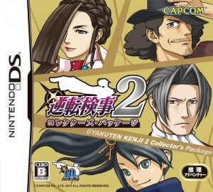

À travers mon parcours vidéo ludique, je me suis intéressé à plusieurs types de jeux différents, que ce soit le jeu de combat, le jeu d’infiltration, le jeu de rôle ou le jeu drôle. Je classe ces types de jeux en deux catégories : La première catégorie regroupe les jeux qui pourront plaire au plus large public, on retrouve par exemple le jeu d’action, le jeu d’infiltration ou encore le FPS. La seconde catégorie regroupe les jeux qui , au contraire des blockbusters, ont moins de chance de plaire à un joueur lambda qui les trouvera peut-être « chiants et stupides », on peut citer par exemple le JRPG, le Point & Click, et ce qui nous intéressera aujourd’hui: le Visual Novel.
Le Visual Novel est un genre de jeux totalement japonais, qui ne peut plaire qu’à un public japonais. Comme son nom l’indique (Visual Novel = Roman Graphique) c’est une histoire racontée par des textes accompagnés d’images, et le joueur pourra interagir avec cette histoire à travers certains choix qu’on lui propose.
Intéressons-nous maintenant à une série de jeux vidéo japonais qui s’est fait connaitre ces dernières années comme étant l’une des rares séries de Visual Novel à ne pas être chiantes : Gyakuten Saiban, ou plus connue hors du japon sous le nom de Ace Attorney.
Les Ace Attorney sont des jeux d’enquête dans lesquels vous incarnez un avocat qui, aidé par son assistante, devront prouver l’innocence de leur client qui sont, dans 95% des cas, accusés de meurtre. Pour cela ils devront mener l’enquête, récolter les preuves et interroger les témoins pour prouver l’innocence de l’accusé et démasquer le véritable coupable du crime.
La série est composée en 8 épisodes, dans ce dossier je ne parlerai en profondeur que des quatre premiers, parce que c’est ceux que je connais le mieux, n’ayant pas fini les quatre derniers qui n’ont pas été officiellement traduits en français (même pas en anglais pour certains).
{kind=link}
Mais avant de commencer de parler des jeux, nous devons nous intéresser à leur principal créateur, Shu Takumi. Ce génial monsieur a intégré Capcom en 1994 et a notamment aidé Shinji Mikami sur le développement de l’excellent Resident Evil 2 en 1998. Il l’aidera également dans le développement de Dino Crisis en 1999 et sera directeur sur sa suite, Dino Crisis 2 en 2000.
Après cela, Takumi décide de créer sa propre série de jeux vidéo. A une époque où c’était la course aux nouvelles technologies dans le marché du jeu vidéo, Takumi décide quant à lui de faire un jeu qui ne mise pas du tout sur les prouesses techniques d’une console vu que le jeu qu’il veut créer est un Visual novel, soit des jeux avec uniquement du texte, des images et des animations basiques. Mais comme c’est un petit foufou dans sa tête, il prend le risque de faire un jeu traitant d’un thème complètement inintéressant pour les joueurs : le monde des avocats et des cours judiciaires. C’est ainsi qu’en 2001 est né Gyakuten Saiban sur GBA.
- Gyakuten Saiban / Phoenix Wright Ace Attorney (2001, GBA)
Le jeu débute en nous mettant dans la peau de Phoenix Wright, jeune avocat novice avec son costard bleu marine et sa coupe de cheveux tout droit sortie d’un tome de Jojo’s Bizarre Adventure, qui passe son premier procès où il devra défendre son ami d’enfance, Paul Défes (oui c’est son vrai nom, je n’invente rien), accusé du meurtre de sa petite amie. Il sera aidé par son mentor, la belle Mia Fey, et devra faire face aux moqueries du procureur (ou avocat de l’accusation, kifkif) Victor Boulay, ainsi qu’à un vieux juge un peu idiot et perspicace.
{kind=link}
Cette première affaire pose les bases d’une partie du gameplay de la série qui sont les phases d’interrogation : Vous devez écouter et réécouter ce que raconte le témoin et essayer de trouver les contradictions présentes dans son témoignage, pour ensuite lui présenter des preuves qui contredisent ce qu’il dit tout en lui hurlant un mythique « OBJECTION ! » dans sa face. Et si jamais vous ne décelez aucune contradiction, vous pouvez « attaquer » le témoin, c’est-à-dire lui demander plus de détails sur une partie de son témoignage.
La seconde affaire du jeu vous introduira la deuxième partie du gameplay : Les phases de recherche. Dans ces phases le jeu se transforme en point & click à la première personne où vous devrez arpenter les différents lieux à votre disposition (le lieu du crime, le centre de détention…) pour récolter les indices cachés dans le décor, et aussi pour soutirer des informations aux différents témoins présents sur ces lieux.
Cette affaire introduira également certains personnages importants à la série, comme Maya Fey, la sœur de Mia (le mentor de Phoenix) qui deviendra votre assistante et vous suivra pendant le reste du jeu, l’inspecteur Dick Tektiv (wellah je n’invente rien !), qui, malgré sa maladresse et son incompétence, viendra en aide à Phoenix à plusieurs reprises, et surtout l’un des personnages les plus charismatiques de la série, Benjamin Hunter, procureur sans scrupules qui fera tout son possible pour obtenir un verdict « coupable », et qui deviendra rival puis ami de Phoenix au fur et à mesure des épisodes.
Suivront ensuite deux autres affaires tout aussi intéressantes et remplies de mystères, qui sont tous reliées entre elles avec un fil conducteur qui préserve une cohérence entre les chapitre, qui connaitra son dénouement durant la quatrième et dernière affaire du jeu, qui est la plus sombre et la plus difficile du jeu (et c’est aussi mon affaire préférée de toute la série).
Phoenix Wright Ace Attorney (2001, GBA)
Le jeu simplifie énormément le système judiciaire afin d’offrir au joueur une narration rythmée aux rebondissements de tous les instants. L’humour, qui est une autre marque de fabrique de la série, est omniprésent que ce soit à travers les jeux de mots dans les noms des personnages (Victor Boulay, Sal Monello, Flavie Eichouette…) ou dans les dialogues entre Phoenix et les témoins, ou même dans les situations assez ridicules dans lesquelles se retrouve le héros.
La bande son du jeu, composée par Noriyuki Iwadare, est un véritable délice auditif. Chaque musique correspond parfaitement au moment du jeu ou elle est utilisée, et chaque musique vous restera gravée dans la tête jusqu’à l’éternité.
Gyakuten Saiban posera les bases de la série que ce soit au niveau du gameplay, de l’univers et des personnages. Le jeu connut un grand succès au japon, et une suite est envisagée pour 2002.
- Gyakuten Saiban 2 / Phoenix Wright Ace Attorney : Justice For All, la petite deception (2002, GBA)
Ce second opus n’apporte pas grand-chose de nouveau à la série. Les graphismes et le gameplay sont les mêmes, ainsi que certaines musiques. La seule nouveauté importante dans cet opus c’est l’intégration d’une « nouvelle » mécanique de gameplay basée sur un objet qu’obtiendra Phoenix dans la seconde affaire du jeu : le Magatama. C’est un objet « mystique » qui, lorsqu’une personne ment, il affiche des chaines et des cadenas devant sa tête, chaque cadenas représente un secret gardé par la personne, et vous devrez détruire ces cadenas en utilisant des preuves solides, et ainsi vous arriverez à faire craquer cette personne et elle vous avouera tout.
{kind=link}
Ce jeu est souvent l’épisode le moins aimé de la série, et ceci à cause de ses affaires : comme dans le précédent il possède en possède quatre, et sur ces quatre « chapitres » y’en a deux qui sont bons : le second et le dernier. Le premier chapitre fait office de tutoriel pour ceux qui n’ont jamais touché à la série, mais il est très mal justifié d’un point de vue scénaristique : Dans le précédent volet, Phoenix était avocat débutant, donc on apprenait le métier (et ainsi les bases du gameplay) en même temps que lui. Ici pour justifier le fait qu’il doit tout réapprendre, ils lui ont fait perdre la mémoire (qu’il retrouvera à la fin du chapitre…). La troisième affaire du jeu est considérée comme étant la pire dans toute la série. Je ne vous dirais pas pourquoi pour ne pas vous spoiler, mais sachez qu’elle contient des personnages insupportables, ainsi qu’un paquet d’incohérences. Heureusement, la dernière affaire du jeu est excellente et remplie de retournements de situation uniques en leur genre, et est considérée comme l’une des meilleures de toute la série.
{kind=link}
Phoenix Wright Ace Attorney : Justice For All (2002, GBA)
Après cet épisode assez décevant pour les fans, Capcom décide de sortir un troisième épisode en 2004 qui cloturera la trilogie, et qui la clôturera en beauté vu que ça reste à ce jour l’épisode le mieux reçu de tous les Ace Attorneys.
- Gyakuten Saiban 3 / Phoenix Wright Ace Attorney : Trials & Tribulations, episode ultime (2004, GBA)
Ce dernier et ultime opus de la trilogie des Phoenix Wright n’ajoute aucune nouveauté au gameplay des précédents épisodes, et pourtant il réussit à rendre chaque chapitre du jeu intéressant, et à rendre chaque personnage très attachant (enfin, pas tous…). Le jeu est le premier de la série à posséder cinq affaires à résoudre et non quatre, et chaque affaire est inoubliable, chacune est remplie de plot twists et de situations loufoques, dans lesquelles vous devrez faire face au mystérieux procureur Godot, grand amateur de café et qui semble avoir une dent contre Phoenix. Mais toutes ces affaires mèneront à une fantastique conclusion, qui risquera de vous faire pleurer d’émotion.
{kind=link}
En bref, Trials & Tribulations est un magnifique bouquet final pour une série qui aura fait trembler toute une communauté de joueurs.
(Et j’ai fait exprès de ne pas trop en parler pour vous obliger à y jouer )
{kind=link}
- Migration et succès mondial
Si les trois premiers jeux de la série Ace Attorney a connu un gros succès, il ne faut pas oublier que la série a été uniquement réservée aux joueurs japonais, et que le reste du monde ignorait son existence. En 2006 Capcom tente le pari de porter les trois premiers épisodes sur la Nintendo DS et dans le monde entier. Le changement de support n’apporte quasiment aucun changement au gameplay du jeu, mais rend le jeu plus agréable à jouer grâce à l’utilisation de l’écran tactile de la console.
{kind=link}
Le premier épisode bénéficiera également d’une affaire bonus, qui est très longue et très difficile, et qui fera appel aux fonctionnalités de la DS et de son écran tactile dans certaines phases d’investigation où vous devrez relever des empreintes digitales ou des taches de sang.
{kind=link}
{kind=link}
{kind=link}
Le portage DS sera extrémement bénéfique à la série, vu qu’elle rencontrera un succés phénoménal à travers le monde qui lui vaudra le titre de « meilleure série de la DS » de la part de plusieurs joueurs et des journalistes.
Suite à cet énorme succès, Capcom décide de poursuivre sa série, et sort en 2008 un premier Spin off qui, malhereusement, ne rencontrera pas un franc succés auprés des joueurs.
- Apollo Justice : Ace Attorney, le vilain petit canard (2008, DS)
Déjà en Europe ça commence mal avec ce jeu : Il sort en Mai 2008, alors que le troisième épisode, Trials & Tribulations, n’était pas encore sorti chez eux, sans explications de la part des éditeurs. Autant dire qu’on a connu mieux comme lancement…
{kind=link}
Outre cette décision stupide de Capcom, le jeu n’a pas plu aux fans de la série, et cela pour plusieurs raisons. Premièrement, le jeu a subit un « effet Raiden », c’est-à-dire que le personnage principal, Phoenix, llaissé en arrière et est remplacé par un nouveau venu du nom d’Apollo Justice, ce qui ne plus pas à tous les fans. Deuxièmement, Apollo est faible comme personnage, c’est-à-dire que ce n’est pas lui qui résout les affaires grâce à son génie ou son intelligence, mais c’est les autres personnages qui font tout le travail pour lui, et il se contente juste de se servir de ce qu’ils ont trouvé pour dénicher le coupable. Enfin, le dénouement de certaines affaires est un peu, voir beaucoup tiré par les cheveux.
Néanmoins je fais partie de ceux qui défendent ce jeu et qui disent qu’il n’est « pas si mauvais que ça ». Parmi les points positifs du jeu, les graphismes et la plupart des sprites ont complètement été refaits et sont devenus beaucoup plus lisses et agréables à regarder. Les musiques sont excellentes, et font partie des meilleures musiques de la série. L’un des points forts du jeu sur lequel s’accordent la plupart des joueurs, c’est la première affaire du jeu : C’est la meilleure première affaire de toute la série, avec un énorme plot twist vers sa fin.
Loin d’être mauvais, Apollo Justice souffre juste de l’absence de cette petite étincelle de folie et d’inventivité qui avait fait le succès des premiers Ace Attorney. Le soft n’apporte au final que très peu à une série qui aurait eu besoin d’un peu d’air pour se renouveler.
{kind=link}
Lors de la promotion du jeu en 2006, Capcom avait aussi laissé entendre qu’un autre jeu était en préparation, et pas n’importe lequel : un jeu basé sur Benjamin Hunter, le procureur charismatique du premier épisode ! Ce titre arrivera quelques années plus tard sous le nom d’Ace Attorney : Investigations, second spin off de la série et qui est totalement différent des précédents. Contrairement aux précédents, Shu Takumi, créateur de la série, ne participera pas du tout à son développement.
- Ace Attorney Investigations : Miles Edgeworth, le changement de direction (DS, 2010)
Ce cinquième opus offre un système de jeu extrêmement différent de celui des précédents. Adieu les décors fixes à examiner, et bonjour l’exploration : Il est possible de diriger Hunter avec la croix directionnelle et lui faire parcourir les différents lieux du jeu à la recherche d’indices et de preuves.
{kind=link}
Exit les tribunaux, la majeur partie du jeu se déroulera « sur le terrain », c’est-à-dire sur les lieux des crimes et leurs environs. Accompagné du génialissime inspecteur Dick Tektiv et d’une jeune apprentie voleuse du nom de Kay, votre but sera le même que dans les précédents volets : Arrêter le coupable prouver l’innocence de l’accusé.

Ace Attorney Investigations : Miles Edgeworth (2010, DS)
Un système de « logique » fait également son apparition, vous permettant de déduire une partie de la vérité en établissant une connexion entre deux indices. Plus la peine donc d’attendre que telle ou telle information vous soit donnée, vous pourrez la deviner tout seul.
Aucun sprite n’a été gardé des précédentes versions, ils ont tous été refaits, et les musiques sont (pour moi) les meilleures de la série.
Innovant, ce nouvel opus démontre que Capcom n’en a pas fini avec sa série. Le seul défaut de ce jeu est qu’il est disponible uniquement en anglais ou en japonais, il n’est jamais sorti en français de manière officielle ! Ce qui fait que les joueurs français non-anglophones ont dû attendre longtemps avant d’obtenir une bonne traduction amateur du jeu, faite par les fans et pour les fans.
- Ace Attorney Investigations : Miles Edgeworth 2, because fuck you !(DS, 2011)
Maintenant que Capcom a réussi à se faire pardonner auprès des fans de la série avec Ace Attorney Investigations, ils décident de continuer sur cette lancée en proposant une suite pour ce dernier volet. On incarne encore une fois Benjamin Hunter, accompagné encore une fois de la jeune Kay, et de l’inspecteur Tektiv. Ils feront la rencontre d’une juge implacable, dont la vision de la justice diffère de la recherche de la vérité pour laquelle Hunter est prêt à enfreindre les règles quand cela s’avère nécessaire, et aussi un détective mystérieux qui avoue avoir travaillé avec Henri Hunter, le père de Benjamin, qui était avocat de la défense.
{kind=link}
Le jeu est très similaire au précédent niveau gameplay, mais intègre quand même une nouveauté intéressante : le Chess Logic. Durant certaines conversations, vous devrez en déceler les points faibles et pendant un temps limité, avec deux choix de dialogues. Si jamais vous pensez que vous avez un avantage dans la conversation, vous pourrez faire avancer votre « pion d’échec » et ainsi approfondir la conversation, et si vous échouez vous perdrez du temps.
Le jeu a été très bien reçu, les fans le trouvant supérieur à l’opus précédant. Le seul bémol dans cette histoire, c’est qu’il est sorti uniquement au japon, ce qui fait que le jeu n’est disponible qu’en japonais ! Et c’est impossible de faire le jeu en japonais car il est basé sur les textes et les dialogues.
Malgré les plusieurs pétitions des fans pour le faire sortir dans le reste du monde, le jeu est resté disponible qu’en japonais. Heureusement, les fans ont réussi à faire une bonne traduction américaine du jeu, et espérons qu’une traduction française soit bientôt disponible !
{kind=link}
- Ace Attorney : Dual Destinies, le bon comeback de Phoenix ? (2013, 3DS)
Après être absent de la barre depuis trois jeux, Phoenix fait son grand retour en tant que personnage jouable sur 3DS avec Dual Destinies ! Non seulement Phoenix est de retour, mais le mal aimé Apollo Justice est également présent dans ce volet, et cette fois il est bien décidé à conquérir le cœur des fans. Vient s’ajouter un nouveau personnage inédit, la jeune avocate Athena Cykes, une sorte d’apprentie de Phoenix qu’il a rencontré durant un voyage en Europe. Ils devront faire face à Simon Blackquill, un condamné à mort au look super dark qui exerce le métier de procureur comme si de rien n’était… Oui ça existe ce genre de mecs.
{kind=link}
Ce jeu marque un gros virage de la série au niveau des graphismes : Adieu les bons vieux sprites, maintenant tout est en 3D (ce qui peut plaire à certains fans mais pas à d’autres). On notera également l’ajout de cinématiques en dessin animé à certains moments du jeu. Le gameplay quant à lui est repris des anciens Ace Attorney, et pas des épisodes Investigations : Les décors sont de nouveau fixes (enfin, pas trop) et faudra les examiner sans pouvoir les explorer.
{kind=link}
Il m’est difficile de parler de ce jeu car je n’y ai pas encore joué, non seulement car je n’ai pas de 3DS mais aussi car le jeu est, encore une fois, pas traduit en français. Malgré le fait que je sois très bon en anglais, je préfère jouer à ces jeux en français pour profiter pleinement de l’humour et des jeux de mots propres à la série.
Ce premier épisode sur 3DS a été très bien accueilli, même par les fans qui avaient peur de l’orientation que prenait la série, et certains le considèrent comme l’épisode le plus loufoque et le plus « what the fuck » de la série.
- Ace Attorney Trilogy, le remake/portage mitigé (2014, 3DS)
Durant l’E3 2014, Capcom annonce un portage HD de la première trilogie DS/GBA sur la nouvelle console de Nintendo. Les premières images du jeu ont laissé quelques fans perplexes : en effet, si la modélisation 3DS de Dual Destinies a plus a beaucoup, le fait de remplacer les anciens sprites pixélisés par des « dessins HD » (chais pas comment appeler ça) n’a pas enchanté grand monde. D’autant plus que ce n’est pas le tout premier portage qu’a connu la série, vu que les trois premiers épisodes ont également été portés sur IOS et sur Wii, mais en préservant les graphismes d’origine.
{kind=link}
Mais le bon gros défaut qui fait tache à ce jeu : l’absence d’une traduction française ! Alors là les joueurs francophones n’en pouvaient plus, jusqu’ici ils ont laissé passer trois nouveaux jeux non traduis, mais le fait que le remake de jeux qui ont déjà une traduction officielle sur DS ne soient pas traduis sur 3DS, ça ils ne pouvaient pas l’accepter.
{kind=link}
Conclusion, ce portage a été très mal acceuilli par plusieurs fans français. Donc si vous avez une 3DS et vous voulez découvrir la série, procurez-vous les jeux originaux sur DS, sinon si vous êtes super fort en anglais, n’hésitez pas à prendre ce portage 3DS.
- Dai Gyakuten Saiban/Great Ace Attorney, ENCORE un spin off ! (3DS, 2015)
Dernier épisode en date, Great Ace Attorney, de son titre original Dai Gyakuten Saiban: Naruhodō Ryūnosuke no Bōken (ouais, Great Ace Attorney c’est plus simple) est un spin off très particulier pour la série, non seulement parce qu’il marque le retour de Shu Takumi en tant que directeur, mais surtout parce qu’il se déroule à la fin du 19ème siècle, et on y incarne un ancètre de Phoenix qui est lui aussi avocat (comme par hasard).
{kind=link}
Le gameplay ainsi que les graphismes sont quasiment les mêmes que dans Dual Destinies. L’ambiance du jeu baigne trop dans le style victorien, et pour couronner le tout, un Sherlock Holmes steampunk est présent dans ce jeu.. Sherlock Holmes quoi !
Encore une fois, il m’est extrêmement difficile de parler de ce jeu, non seulement car il vient juste de sortir, mais aussi car il n’a pas encore été traduit en anglais, et. Mais à ce qui parait le jeu est du même niveau que le précédent (Dual Destinies, pas le remake), c’est à dire très bon, voire excellent. Espérons qu’une traduction anglaise officielle puisse voir le jour, et pourquoi pas une traduction française tant qu’on y est (soyons fous !)
{kind=link}
Il est évident qu’une licence à succès, que ce soit du côté du jeu vidéo, du cinéma ou de la bande dessinée, possède plusieurs produits dérivés à son effigie. Ace Attorney n’échappe pas à la règle, et les avocats les plus connus du jeu vidéo assurent un fan service permanant. Parmi les produits dérivés de la série on retrouve principalement :
- Mangas
Comme plusieurs séries de jeux vidéo japonais, Ace Attorney a eu ses adaptations en manga. Les affaires traités dans ces mangas sont complétement inédites, et n’existent pas dans les jeux d’origine. D’ailleurs, certains de ces mangas ont été édités en français !
{kind=link}
Les mangas sont des « adaptations » des jeux Ace Attorney et Ace Attorney Investigations. Une adaptation d’Apollo Justice est également prévue au japon.
{kind=link}
- Comédie Musicale
{kind=link}
Parce que le succès n’empêche pas les plus grandes folies, une troupe entièrement féminine japonaise a décidé d’adapter la saga sous forme de comédie musicale. Le résultat est aussi amusant que bizarre !
- Un petit tour au cinéma
{kind=link}
En 2012 sors le premier film live adapté de la série, sobrement intitulé « Ace Attorney ». Réalisé par le japonais Takeshi Miike (Ichi the Killer, Gozu, La mort en ligne…), le film reprends l’histoire du premier jeu, mais adapte seulement la seconde et quatrième affaire. Le film a connu un succès mitigé, certains le considèrent comme la meilleure adaptation de jeu vidéo au cinéma depuis longtemps, alors que d’autres critiquent le fait que le film soit lent et mou.
{kind=link}
La série Ace Attorney est l’une des séries les plus réussie de ces dix dernières années, et probablement la meilleure représentante du genre Visual Novel, genre extrêmement underground pour un public non-japonais. Tout dans cette série est génial, que ce soit les graphismes propres à la série, le gameplay super simple et super facile à prendre en main, les scénarios très bien ficelés, l’humour léger et très bien placé, les personnages très uniques et très attachants… Bref, cette série a tout pour plaire !
J’aimerais remercier monsieur Shu Takumi qui m’a fait ressentir plusieurs émotions grâce à ses jeux, des émotions que je ressens rarement en jouant à un jeu vidéo. Je remercie également Capcom qui, sans eux, la série ne serait pas aussi connue à travers le monde, mais je remercie surtout l’équipe de traduction française et américaine, qui ont réussi à retranscrire à merveille l’ambiance de la série, ainsi que les fans qui ont énormément travaillé pour rendre certains jeux jouables pour les joueurs non anglophones.
C’est vraiment une série qui a marqué mon parcours de joueur, et que je recommande à tout le monde. Ça peut paraitre chiant, mais quand vous suivez bien l’histoire et les textes ça deviens très amusant et reposant. J’espère que ce premier dossier/article vous aura plu et vous donnera envie de vous intéresser à la série, et sur ce je vous laisse avec cette reprise Jazz d’un des meilleures thèmes musicaux de la série : https://www.youtube.com/watch?v=HMnrl0tmd3k
{kind=link}
Sources : Jeuxvidéo.com, Wikipedia, Wikia Ace Attorney, culture et expérience personnelle.